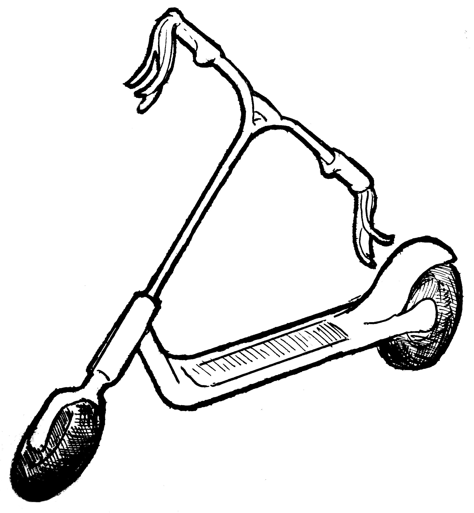

2 NURS 915 & 916: Applied Statistics 1 & 2
This “chapter” contains links to the presentations and materials covered in the Applied Statistics courses of the curriculum, NURS 915 and 916.
2.1 Review of Some Major Principles & Practices in Biostatistics
- Variability & Randomness
- Levels of Measurement
- Descriptive & Inferential Statistics
- Sources of Variance and the Signal-to-Noise Ratio
- Designing and Answering Questions
- Hypothesis Testing
2.2 Presenting Results
- Visualization
- Self Sufficiency
- Efficient Information Transfer
- Data-to-Ink Ratio
- Follow Conventions & Readers’ Expectations
2.2.1 Writing Results
- Writing Results Sections
- Tell a Story
- Use Figures & Tables as Talking Points
- Use Statistcs as Citations to Support Assertions
Additional information and resources are given in Chapter 3.
2.3 Introduction to Linear Models
- Review of Underlying Concepts in Inferential Statistics
- Additional information and resources are given in Chapter 5
- Understanding Linear Models
- Basic Concepts
- Linear Models Vs. Correlations
- Understanding the Linear Equation
- Linear Models Vs. ANOVAs
- Terms in Linear Models
- Adding Terms to Models
- Signal-to-Noise in Linear Models
- Generalized Linear Models
- An Example
- Further Considerations
- Multicollinearity
- Independence of Cases
Additional information and resources—including steps to conducting them in SPSS—are given in Chapters 8 and 9
2.4 Testing Models Theoretically
- Review of Linear Regression Model
- Partialling out Variance
- Combining Similar Sources of Variance
- Ostensible & Non-Ostensible Variables
- Model Fit
Recording 1 - A Zoom recording from a previous semester, this recording contains a review of linear models and introduction to tests of model fits.
Recording 2 - An other Zoom recording from a prior semester, this covers an explanation of ANOVAs and their qualities vs. general linear models
2.5 Analyses of Longitudinal Data
- Longitudinal analyses, including some of their benefits and challenges
- A brief comparison of the merits of pre-post difference scores, including pretest covariates in ANCOVAs, and repeated-measures ANOVAs.
- An introduction to the sorts of multilevel models of change that Singer & Willett (2003) describe
Additional information and resources—including steps to conducting them in SPSS—are all currently located in Chapter 10.
2.6 Logistic Regresssion
- Logistic regression vs. general linear regression
- Explanation of the math
- Testing effects & model fit
- Types of logistic regression
- Examples
2.7 Structural Equation Modeling
Structural equation models can be considered a sort of bridge between generalized linear regression and the factor analyses we’ll cover in NURS 925, Psychometrics.
- Core Concepts
- Mechanics of SEMs
- Comparing Models
- Example of SEMs
